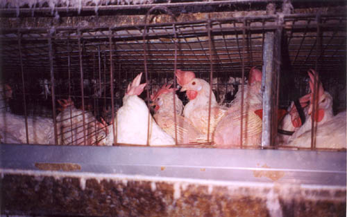
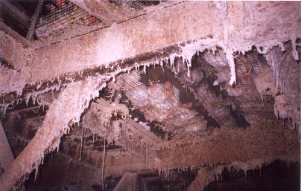
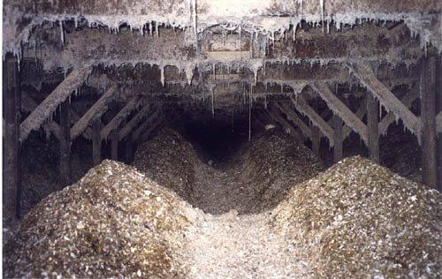
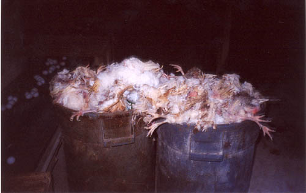
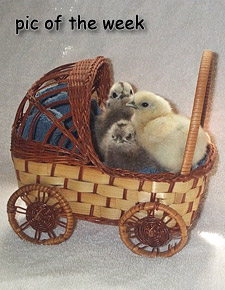

Why Chickens At Your
Local
Supermarket Are So Cheap

Efficiency. Efficiency. From birth to death, modern
farming
techniques crowd animals
together, feed and fatten them as fast as possible. Massive
amounts of antibiotics are
mixed in with the feed to lesson the inevitable mortality from the
spread of disease that
will result under these conditions -- a paradise for bacteria.

A view from below a crowded chicken coop. Coop = as in
uncomfortable confined
space. Excess antibiotics are mixed in with the chicken
manure. Natural selection will
take place with a battle between the antibiotics and the massive
amounts of bacteria
breeding in the manure.

Inevitably, some of this manure, along with the antibiotics, will
run-off into streams
and rivers.

All the antibiotics in the world will not save this many chickens
raised in such a
cramped environment.

Images for Children. Chickens are not
raised like this.
For similar treatment in pigs, see a picture of a gestation crate.
The
Union of Concerned scientists has estimated that 10 million pounds
of antibiotics are used by the hog industry per year in the United
States.